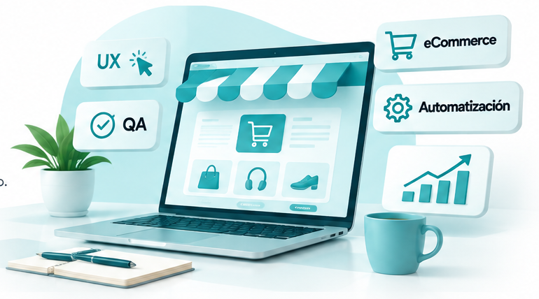

E-commerce
Carga y actualización de catálogos, fichas de productos, variantes, precios, inventarios y seguimiento de pedidos.
Apoyo especializado en e-commerce, pruebas de experiencia de usuario, calidad de software y automatización de procesos. Soluciones prácticas adaptadas a cada proyecto.

Apoyo para mejorar la operación, la experiencia de compra y la calidad de productos digitales.
Carga y actualización de catálogos, fichas de productos, variantes, precios, inventarios y seguimiento de pedidos.
Pruebas de usabilidad, revisión de recorridos de compra, detección de fricciones y recomendaciones de mejora.
Pruebas funcionales, documentación de incidencias, validación de flujos y verificación de correcciones.
Organización de datos y automatización de tareas repetitivas, reportes y flujos operativos según las necesidades del negocio.
Un proceso sencillo, con alcance y entregables claros.
Conocemos el problema, las herramientas actuales y el resultado que buscas.
Acordamos actividades, prioridades y entregables antes de comenzar.
Documentamos el trabajo y revisamos los resultados.
Cuéntame qué necesitas y revisemos cómo puedo apoyarte.
El enlace de WhatsApp se activará cuando agregues tu número de contacto en la configuración del sitio.